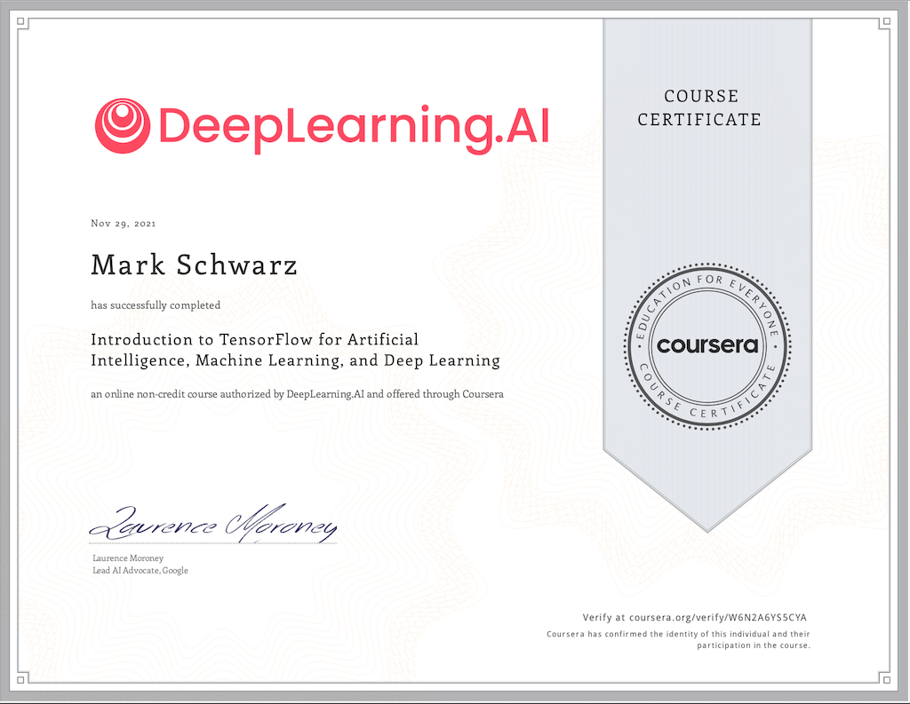
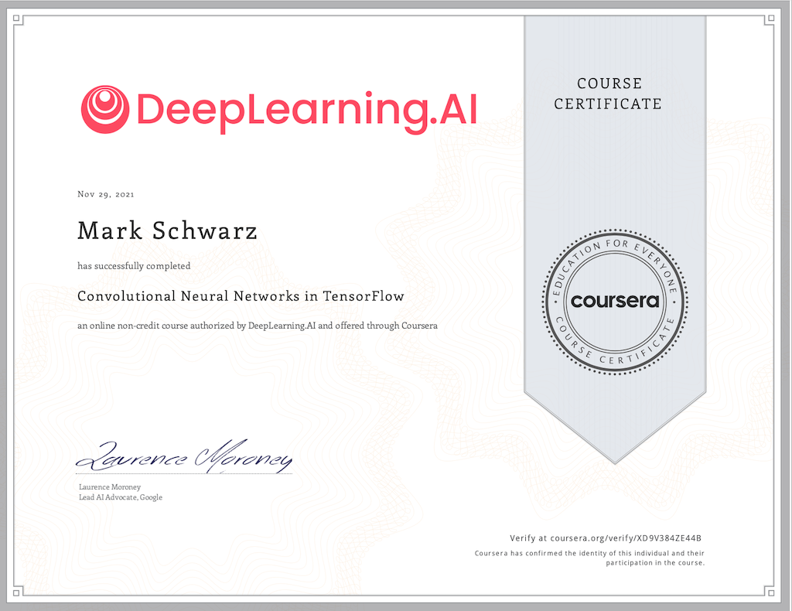

How I passed the TensorFlow Certification Exam

This is the journey of how I passed the TensorFlow certification exam from no knowledge to become confident to take the exam. It wasn't too easy nor too difficult for someone who isn't working with machine learning on a day-to-day basis.
Info
DISCLAIMER: It is not guaranteed to pass the exam even if completed all the material and tips on this page
To be honest, the concept of machine learning, deep learning, etc., isn't completely new to me. I had taken a couple of courses in my Master's Degree related to this topic and quite enjoyed it. But at that time, I have had other plans for my career. That will be a story for another time. With no further ado, let's jump right into the topic of this page.
What to expect
What to expect
For more resource-based information look up here.
Introduction
Before we jump right into the resources I took, I would like to talk a bit about the TensorFlow exam itself. The exam has a total time of 5 hours, with 5 questions, and will be performed on your local machine. It's a non-proctor test, which means there is no one to observe you when taking the exam. Everything can be used during the exam, but please don't cheat. You can find the latest TensorFlow news on TensorFlow certification exam page. For now, let's move on. I will walk more about the exam later on this page.
Where to learn
Udemy
I have bought a Udemy course about machine learning quite before I actually studied it. It's becoming a habit of mine to buy courses on Udemy when an interesting one has a discount. There are a lot of interesting courses with great instructors. If you want to learn something new or even want to know more about a topic in an organized way, this is the place. You might argue that there are other sources. Yes, I agree. But I prefer Udemy. It is like a commitment to me to go through that stuff if I have to pay for it.
It wasn't until I found Zero to Mastery TensorFlow for Deep Learning by Danial Bourke on Udemy that make me started it seriously. Don't worry, the link isn't an affiliate link and I'm not getting anything if you bought it. This course is excellent. It covers all of the basics to intermediate topics. Well, I won't say it covers the advance topics, since I'm far from a professional TensorFlow developer and there is still a lot to learn. I start learning it in November and finished all the material in the same month. You can see my notes in the resource section. Don't expect that my notes will be much different or filled with explanations like Daniels's. Most of the topics in the course are more advance than the exam. You actually won't do serious modeling during the exam.
The course has a wonderful online book here. The first part of the course is also made free on YouTube. Check out his channel here. A repo (here) is also available with all super-detailed explanations. IMO, his resource is gold. It is so detailed that it's no need to watch his videos. But please consider supporting him if you can. It's the least you can do to support him, even when you buy it when the course is at a discount. Sorry, Daniel, I'm one of them.
Coursera
Coursera is a very well-known online resource. It's more like a huge university. The course that I'm talking about is the DeepLearning.AI TensorFlow Developer Specialization. The specialization is all about TensorFlow. Don't expect to learn machine learning in general. There is another course for it besides this one. This specialization consists of 4 courses;
1) Introduction to TensorFlow for Artificial Intelligence, Machine Learning, and Deep Learning: In this course, you will learn the very basics thin about machine learning and TensorFlow.
2) Convolutional Neural Network in TensorFlow: learn how to use images in TensorFlow
3) Natural Language Processing in TensorFlow: learn how to use text data in TensorFlow
4) Sequences, Time Series and Prediction: learn how to use sets of related numerical data in TensorFlow
The entire course is absolutely a must to learn if you are not familiar with TensorFlow. Fortunately, you will get a free 7 days trial for the professional course. After that, you have to pay. I finished the course within the trial period. It only covers the very basic stuff and it is very useful. Try to make the exercise in each course on your local machine or on Google Colab or Jupyter Notebook. I would strongly suggest doing it on your local machine on an IDE like Pycharm. You can use your preferred IDE, but if you haven't used Pycharm before, this is the best opportunity, Because the TensorFlow exam must be done on Pycharm.
I personally did all the exercises on Pycharm because I wanted to know how my laptop could handle the calculation. It's also good to know what you have to face during the exam. Better to be prepared.
Udacity
The Intro to Machine Learning with TensorFlow on Udacity is almost identical to the Coursera's one, with a slight of differences. I have skimmed most of it since I know most of the stuff from both resources mentioned above.
TensorFlow website
In fact, here is everything you actually need for your TensorFlow journey. There are a lot of tutorials that you can practice on. I personally have done most of them. A few on my laptop to check its performance. If you have time, practice a few of them. It will be worth your time.
(Optional) Kaggle
If you want more challenges before taking the exam, then Kaggle is your way to go. There are a lot of datasets and machine learning models that anyone can practice on. There are people going at length to show their efforts in training their model to pull the best result out. Kaggle has a lot of datasets available publicly for everyone. You might pick one and use it to train your skills on TensorFlow. If you get stuck you can go back to your dataset source and look out how others approach the problem.
Before the Exam
After you have some level of confidence and want to challenge yourself to take the exam, it is time to organize your notes and make sure that things will go smoothly. But first, let's register for the exam.
Register for the exam
TensorFlow's website and documentation have explained the registration process in detail. However, after completing the registration by paying the exam fee and submitting all the necessary verification documents, it might take a few hours before getting a response from the system to allow you to start the exam. Nothing to worry about during this process.
Prepare your notes
TensorFlow has a very detailed documentation of what you need to know. It seems overwhelming at first. If you go through at least one of the courses listed above you should have enough skills and knowledge to check all the points on the skill list
The exam has 5 questions and will increase the difficulty with each question. By the time given of 5 hours, there will be plenty of time to do. Personally, I took the full time. No shame here. Why? I will talk about it in a bit.
My advice. Organize your notes and projects that you have done so far. Make it easy to get access as quick as possible.
Prepare your machine
For me, this was the crucial part. Somehow, my laptop couldn't handle the training of image classifications well enough. I always have problems training it on my machine. So, be sure that your machine is prepared. If not, you can use Google Colab to do the training and copy it to your local machine.
Make sure that all requirements have been met as stated in the TensorFlow exam documentation. If you have practiced any TensorFlow modeling on your laptop before, then you should be on the safe side.
During the exam
Use Google Colab if you haven't a GPU
It is allowed to use Google Colab during the Exam. Don't hesitate to use it. In fact, you should use it if you can. Just make sure that you don't use all your quotas 24 hours before the exam or use it during a high-demand period. Otherwise, training a complex model will be a headache.
When I took the exam, unfortunately, I couldn't connect to a Google Colab GPU halfway through the exam. I'm not sure if they have a quota for each person or what, but somehow I got a message that I can't connect because I used it too much?!? So, be sure to use it during low demand and have enough computation hours left for the exam.
Have a stable internet connection
Nothing to say much about this one. Only make sure that you always have a stable connection.
Submit result and move to the next question
You can submit your result as often as you want during the exam. In fact, use it to your advantage and submit frequently right after finishing training a model. If you have finished training a model, submit it to see how well it performed. A 5 points score will indicate how your model is performing. It might take some time to get the result back. Don't wait for it, move to the next question. Keep in mind that not all questions aren't equally marked. The more difficulty the more the weight.
What to do if you encounter a problem
If you have practiced enough, it is more likely that the exam will run smoothly. Per Murphie law, "S**t happens. You can't be prepared enough.
First, keep cool!
Look up in the TensorFlow documentation or search it on the internet. It is likely that others have encountered the same problem as you.
I personally had some problems during the exam. One of the trained models took more time to submit. I actually finished all the questions within 3 and half hours. But there was one question that I trying to re-submit. I'm not sure what courses the problem. I tried to submit it multiple times. I couldn't do anything except for waiting. When the time passed by to the last half an hour, I realized that multiple training results are uploading at the same time. I canceled all of them, then try to re-submit again. Unfortunately, it wasn't enough time. However, I reached a full score in 4 of 5 questions and a score of 4 out of 5 in the one that I have difficulties with. It was enough to make me pass the exam.
After the exam
You will receive the exam result not long after the exam. In the meantime, relax, go watch a movie, or go out and make your day. Be proud, you deserve it!
List of all my certificates
TensorFlow Developer Certificate
Coursera: DeepLearning.AI TensorFlow Developer

Coursera: Part 1 - Introduction to TensorFlow for AI, ML, and DL

Coursera: Part 2 - Convolutional Neural Networks in TensorFlow
